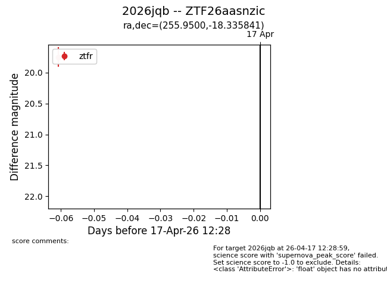
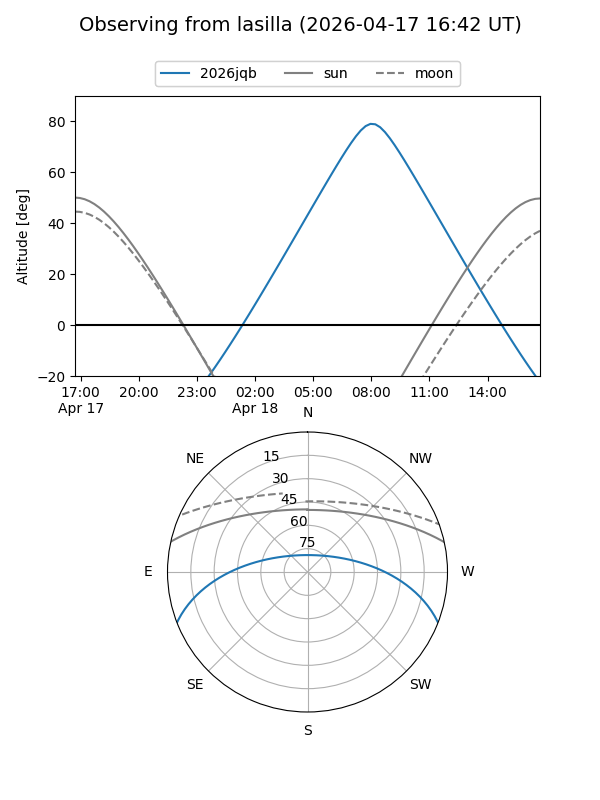
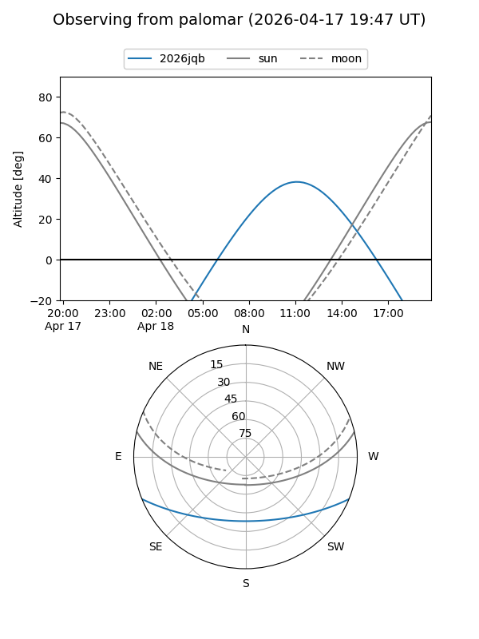
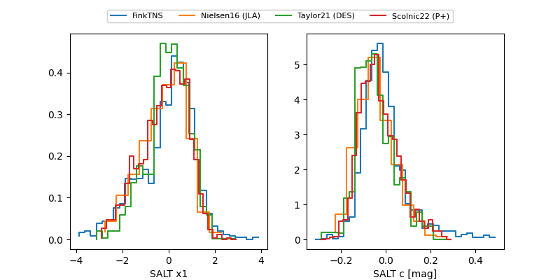

2026jqb
Target 2026jqb at 2026-04-17 12:38
Aliases and brokers:
FINK: link
Lasair: link
ALeRCE: link
TNS: link
YSE: link
alt names
ZTF26aasnzic (ztf,fink_ztf)
2026jqb (tns,yse)
Coordinates:
equatorial (ra, dec) = 255.9500,-18.33584
equatorial (HMS+DMS) = 17:03:48.01,-18:20:09.03
galactic (l, b) = (3.5874,+13.82138)
Flags:
Photometry:
last ztfr=19.75
1 ztfr detections
Lightcurve

Visibility


Additional plots
